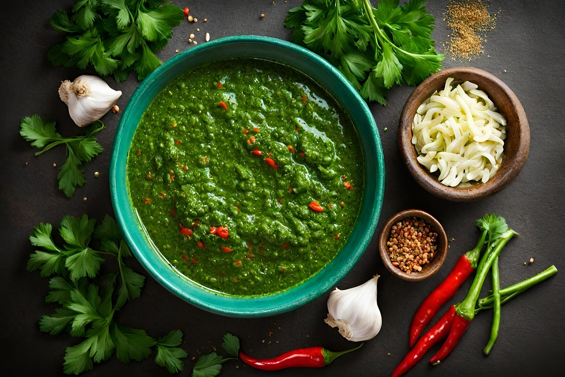

Chimichurri Sauce

Chimichurri Sauce
Ingredients
- 1 cup fresh parsley
- ¾ cup extra virgin olive oil
- 3 tablespoons red wine vinegar
- 1 tablespoon white wine vinegar
- 2 tablespoons dried oregano
- 2 teaspoons ground cumin
- 1 ½ teaspoons minced garlic
- salt and freshly ground black pepper to taste
- 1 teaspoon red pepper flakes
Steps
- Combine parsley, oil, vinegar, oregano, cumin, garlic, hot sauce, and salt in a blender or food processor. Mix on medium speed until ingredients are evenly blended, about 10 seconds..
- Top with remaining 1 tablespoon olive oil and red pepper flakes right before serving.